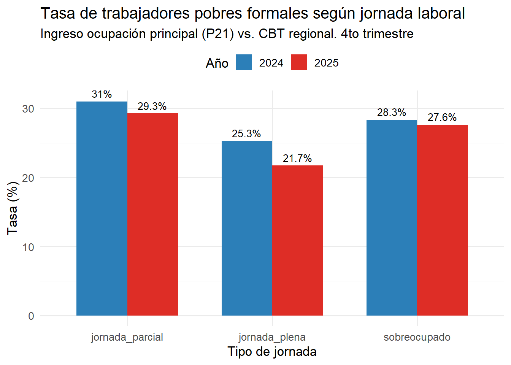
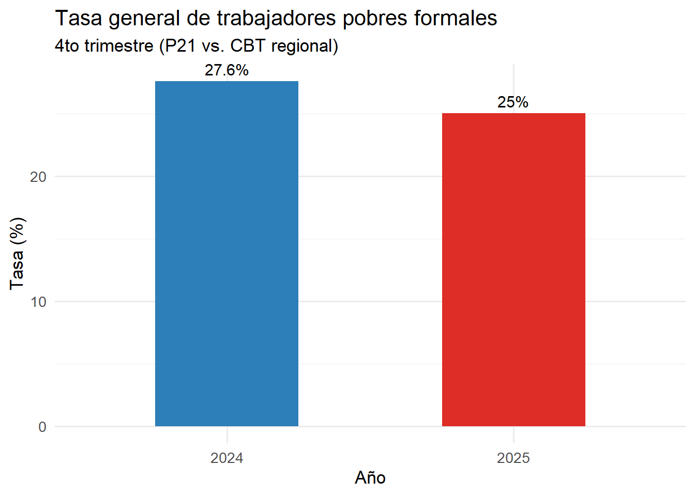
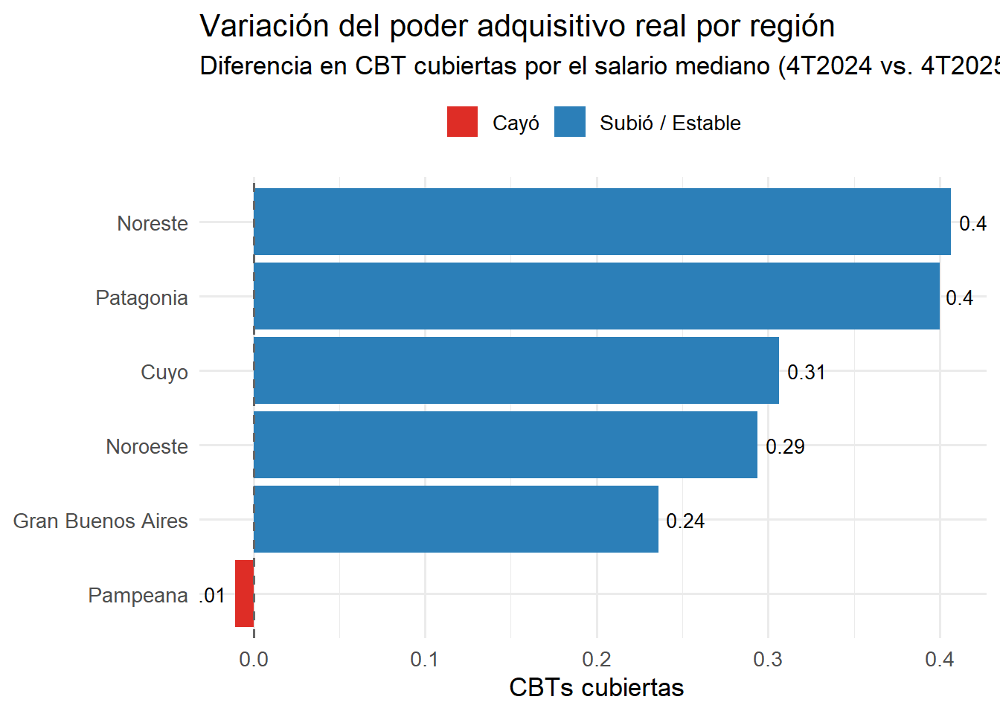
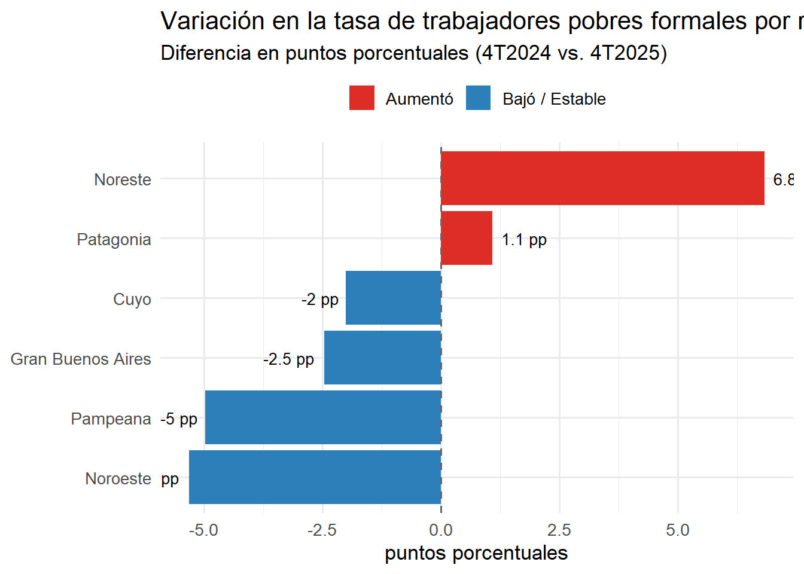
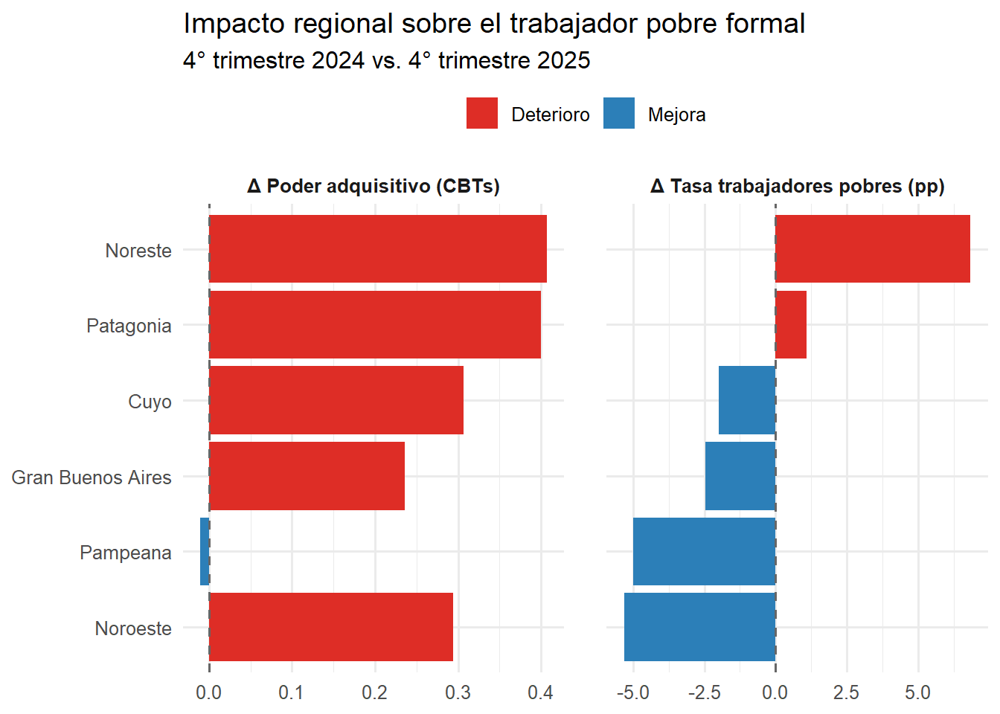

renv::init()Creación de un indicador propio con base en la EPH y la canasta básica total
library(tidyverse)── Attaching core tidyverse packages ──────────────────────── tidyverse 2.0.0 ──
✔ dplyr 1.2.1 ✔ readr 2.2.0
✔ forcats 1.0.1 ✔ stringr 1.6.0
✔ ggplot2 4.0.3 ✔ tibble 3.3.1
✔ lubridate 1.9.5 ✔ tidyr 1.3.2
✔ purrr 1.2.2
── Conflicts ────────────────────────────────────────── tidyverse_conflicts() ──
✖ dplyr::filter() masks stats::filter()
✖ dplyr::lag() masks stats::lag()
ℹ Use the conflicted package (<http://conflicted.r-lib.org/>) to force all conflicts to become errorslibrary(readxl)
library(DT)Abrimos los dos excels de interés
eph_archivo_2025 <- "data/usu_individual_T425.txt"
eph_archivo_2024 <- "data/usu_individual_T424.txt"
cbt_archivo <- "data/canasta-basica-total-regiones-del-pais.csv"eph_df_2025 <- read.csv(eph_archivo_2025, sep=";", encoding="UTF-8", colClasses="character")
eph_df_2024 <- read.csv(eph_archivo_2024, sep=";", encoding="UTF-8", colClasses="character")
cbt_df <- read_csv(cbt_archivo)Rows: 117 Columns: 7
── Column specification ────────────────────────────────────────────────────────
Delimiter: ","
dbl (6): gran_buenos_aires, cuyo, noreste, noroeste, pampeana, patagonia
date (1): indice_tiempo
ℹ Use `spec()` to retrieve the full column specification for this data.
ℹ Specify the column types or set `show_col_types = FALSE` to quiet this message.El primer paso es unir ambos trimestres de interés y lograr un solo df con la operación UNION, bind_rows en tidyverse
eph_df <- bind_rows(eph_df_2025, eph_df_2024) |>
mutate(
EMPLEO = as.numeric(EMPLEO),
P21 = as.numeric(P21),
P47T = as.numeric(P47T),
PP3E_TOT = as.numeric(PP3E_TOT),
ANO4 = as.numeric(ANO4),
REGION = as.numeric(REGION)
)Warning: There were 2 warnings in `mutate()`.
The first warning was:
ℹ In argument: `P21 = as.numeric(P21)`.
Caused by warning:
! NAs introduced by coercion
ℹ Run `dplyr::last_dplyr_warnings()` to see the 1 remaining warning.Empezamos trabajando en el archivo de la EPH. Vamos a filtrar por los trabajadores formales. Para eso usaremos la variable EMPLEO, que nos dice directamente si la persona está registrada en un régimen de trabajo formal. En esta, los valores representan lo siguiente: 1 = Formal 2 = Informal 9 = Ns/Nr
formales_df <- eph_df |>
filter(EMPLEO == 1)La idea es desagregar los trabajadores según las horas trabajadas (PP03D), dividiendo a los trabajadores en “subocupados” (menos de 35 hs), “jornada plena” (35-45 hs) o “sobreocupados” (más de 45 hs). Así se verá si el fenómeno del “trabajador pobre” afecta incluso a quienes cumplen jornadas completas.
formales_df <- formales_df |>
mutate(jornada = case_when(
PP3E_TOT < 35 ~ "jornada_parcial",
PP3E_TOT <= 48 ~ "jornada_plena",
PP3E_TOT > 48 ~ "sobreocupado"
))Seguimos con la Canasta Básica Total (CBT). El objetivo es quedarse con dos puntos de interés en el tiempo, el cuarto trimestre de 2025 y su equivalente del año 2024. También se saca un promedio de los meses dentro del trimestre, dado que originalmente tenemos distintas dimensiones de tiempo en ambos datasets.
cbt_4t_2024 <- cbt_df |>
filter(indice_tiempo >= "2024-10-01", indice_tiempo <= "2024-12-01") |>
summarise(across(where(is.numeric), mean)) |>
mutate(ANO4 = 2024, TRIMESTRE = 4)
cbt_4t_2025 <- cbt_df |>
filter(indice_tiempo >= "2025-10-01", indice_tiempo <= "2025-12-01") |>
summarise(across(where(is.numeric), mean)) |>
mutate(ANO4 = 2025, TRIMESTRE = 4)
cbt_trimestres <- bind_rows(cbt_4t_2024, cbt_4t_2025)La idea ahora es hacer el join con formales_df. El problema es que la CBT está en formato ancho (una columna por región) y la EPH tiene la región como un código numérico en la columna REGION. Para ello, la idea es pivotear la CBT a formato largo y mapear los códigos uno a uno.
cbt_long <- cbt_trimestres |>
pivot_longer(
cols = c(gran_buenos_aires, cuyo, noreste, noroeste, pampeana, patagonia),
names_to = "region_nombre",
values_to = "cbt_valor"
) |>
mutate(REGION = case_when(
region_nombre == "gran_buenos_aires" ~ 01,
region_nombre == "noroeste" ~ 40,
region_nombre == "noreste" ~ 41,
region_nombre == "cuyo" ~ 42,
region_nombre == "pampeana" ~ 43,
region_nombre == "patagonia" ~ 44
))Join con formales_df
formales_df <- formales_df |>
left_join(cbt_long, by = c("ANO4", "REGION"))Tabla de resumen
formales_df |> select(ANO4, REGION, cbt_valor) |> head(10) ANO4 REGION cbt_valor
1 2025 40 328204.1
2 2025 40 328204.1
3 2025 40 328204.1
4 2025 40 328204.1
5 2025 40 328204.1
6 2025 40 328204.1
7 2025 43 402749.3
8 2025 43 402749.3
9 2025 43 402749.3
10 2025 43 402749.3métrica A: tasa de trabajadores pobres según jornada laboral (part-time, completa, sobreocupado)
Clasificamos a cada trabajador formal como “pobre” si su ingreso de la ocupación principal (P21) no alcanza a cubrir la Canasta Básica Total de su región. Cabe aclarar que la CBT está expresada por adulto equivalente, es decir, representa el costo de cubrir las necesidades básicas de un adulto de referencia (varón de 30-60 años). Por lo tanto, lo que medimos aquí es si el salario individual del trabajador formal alcanza al menos para cubrir sus propias necesidades básicas, sin considerar la carga familiar. Esta es una simplificación metodológica, puesto que en la práctica, muchos trabajadores deben sostener hogares con varios miembros. Aún así, no alcanzar la CBT individual es un umbral mínimo que evidencia con claridad la insuficiencia del ingreso laboral.
formales_df <- formales_df |>
mutate(trabajador_pobre = ifelse(P21 < cbt_valor, 1, 0))Calculamos la tasa de trabajadores pobres por tipo de jornada y año.
tasa_por_jornada <- formales_df |>
filter(!is.na(jornada), !is.na(trabajador_pobre)) |>
group_by(ANO4, jornada) |>
summarise(
n = n(),
pobres = sum(trabajador_pobre),
tasa = mean(trabajador_pobre) * 100,
.groups = "drop"
)
tasa_por_jornada# A tibble: 6 × 5
ANO4 jornada n pobres tasa
<dbl> <chr> <int> <dbl> <dbl>
1 2024 jornada_parcial 3972 1231 31.0
2 2024 jornada_plena 6264 1583 25.3
3 2024 sobreocupado 1768 501 28.3
4 2025 jornada_parcial 3595 1052 29.3
5 2025 jornada_plena 5795 1259 21.7
6 2025 sobreocupado 1552 429 27.6Gráfico: Tasa de trabajadores pobres por jornada y año
ggplot(tasa_por_jornada, aes(x = jornada, y = tasa, fill = factor(ANO4))) +
geom_col(position = "dodge", width = 0.7) +
geom_text(
aes(label = paste0(round(tasa, 1), "%")),
position = position_dodge(width = 0.7),
vjust = -0.5, size = 3.5
) +
scale_fill_manual(
values = c("2024" = "#2c7fb8", "2025" = "#de2d26"),
name = "Año"
) +
labs(
title = "Tasa de trabajadores pobres formales según jornada laboral",
subtitle = "Ingreso ocupación principal (P21) vs. CBT regional. 4to trimestre",
x = "Tipo de jornada",
y = "Tasa (%)"
) +
theme_minimal(base_size = 13) +
theme(legend.position = "top") +
ylim(0, NA)
Tasa general (sin desagregar por jornada)
tasa_general <- formales_df |>
filter(!is.na(trabajador_pobre)) |>
group_by(ANO4) |>
summarise(
n = n(),
pobres = sum(trabajador_pobre),
tasa = mean(trabajador_pobre) * 100,
.groups = "drop"
)
tasa_general# A tibble: 2 × 4
ANO4 n pobres tasa
<dbl> <int> <dbl> <dbl>
1 2024 12004 3315 27.6
2 2025 10942 2740 25.0ggplot(tasa_general, aes(x = factor(ANO4), y = tasa, fill = factor(ANO4))) +
geom_col(width = 0.5) +
geom_text(aes(label = paste0(round(tasa, 1), "%")), vjust = -0.5, size = 4) +
scale_fill_manual(values = c("2024" = "#2c7fb8", "2025" = "#de2d26")) +
labs(
title = "Tasa general de trabajadores pobres formales",
subtitle = "4to trimestre (P21 vs. CBT regional)",
x = "Año",
y = "Tasa (%)"
) +
theme_minimal(base_size = 13) +
theme(legend.position = "none") +
ylim(0, NA)
Tabla resumen
tabla_resumen <- tasa_por_jornada |>
mutate(tasa = round(tasa, 2)) |>
pivot_wider(
names_from = ANO4,
values_from = c(n, pobres, tasa),
names_glue = "{.value}_{ANO4}"
)
datatable(
tabla_resumen,
caption = "Trabajadores pobres formales por tipo de jornada (4T 2024 vs 4T 2025)",
options = list(dom = "t", pageLength = 5),
rownames = FALSE
)Métrica B: poder adquisitivo real del salario formal por región
Calculamos el salario mediano de los trabajadores formales en cada región y lo expresamos en cantidad de Canastas Básicas Totales que cubre. Esto permite comparar el poder adquisitivo real entre regiones y entre años.
salario_por_region <- formales_df |>
filter(!is.na(P21), P21 > 0) |>
group_by(ANO4, REGION) |>
summarise(
salario_mediano = median(P21, na.rm = TRUE),
cbt_promedio = mean(cbt_valor, na.rm = TRUE),
poder_adq = salario_mediano / cbt_promedio,
.groups = "drop"
)
salario_comparado <- salario_por_region |>
pivot_wider(
names_from = ANO4,
values_from = c(salario_mediano, cbt_promedio, poder_adq),
names_glue = "{.value}_{ANO4}"
) |>
mutate(
region_nombre = case_when(
REGION == 01 ~ "Gran Buenos Aires",
REGION == 40 ~ "Noroeste",
REGION == 41 ~ "Noreste",
REGION == 42 ~ "Cuyo",
REGION == 43 ~ "Pampeana",
REGION == 44 ~ "Patagonia"
),
delta_poder_adq = poder_adq_2025 - poder_adq_2024,
tendencia = ifelse(delta_poder_adq < 0, "Cayó", "Subió / Estable")
)Gráfico: Variación del poder adquisitivo real por región
ggplot(salario_comparado, aes(x = reorder(region_nombre, delta_poder_adq),
y = delta_poder_adq, fill = tendencia)) +
geom_col() +
geom_hline(yintercept = 0, linetype = "dashed", color = "gray40") +
geom_text(
aes(label = round(delta_poder_adq, 2)),
hjust = ifelse(salario_comparado$delta_poder_adq >= 0, -0.2, 1.2),
size = 3.5
) +
coord_flip() +
scale_fill_manual(values = c("Cayó" = "#de2d26", "Subió / Estable" = "#2c7fb8")) +
labs(
title = "Variación del poder adquisitivo real por región",
subtitle = "Diferencia en CBT cubiertas por el salario mediano (4T2024 vs. 4T2025)",
x = NULL,
y = " CBTs cubiertas",
fill = NULL
) +
theme_minimal(base_size = 13) +
theme(legend.position = "top")
Tabla: poder adquisitivo por región
salario_comparado |>
select(
Region = region_nombre,
`Salario med. 2024` = salario_mediano_2024,
`Salario med. 2025` = salario_mediano_2025,
`CBTs cubiertas 2024` = poder_adq_2024,
`CBTs cubiertas 2025` = poder_adq_2025,
` CBTs` = delta_poder_adq,
Tendencia = tendencia
) |>
mutate(across(where(is.numeric), \(x) round(x, 2))) |>
datatable(
caption = "Poder adquisitivo real del salario mediano formal por región",
options = list(dom = "t", pageLength = 6),
rownames = FALSE
)Métrica C: tasa de trabajadores pobres formales por región
Desagregamos la tasa de trabajadores pobres por región para identificar las disparidades geográficas y su evolución interanual.
tasa_por_region <- formales_df |>
filter(!is.na(trabajador_pobre)) |>
group_by(ANO4, REGION) |>
summarise(
tasa_pobres = mean(trabajador_pobre) * 100,
.groups = "drop"
) |>
pivot_wider(
names_from = ANO4,
values_from = tasa_pobres,
names_prefix = "tasa_"
) |>
mutate(
region_nombre = case_when(
REGION == 01 ~ "Gran Buenos Aires",
REGION == 40 ~ "Noroeste",
REGION == 41 ~ "Noreste",
REGION == 42 ~ "Cuyo",
REGION == 43 ~ "Pampeana",
REGION == 44 ~ "Patagonia"
),
delta_tasa = tasa_2025 - tasa_2024,
tendencia = ifelse(delta_tasa > 0, "Aumentó", "Bajó / Estable")
)Gráfico: Variación en la tasa de trabajadores pobres por región
ggplot(tasa_por_region, aes(x = reorder(region_nombre, delta_tasa),
y = delta_tasa, fill = tendencia)) +
geom_col() +
geom_hline(yintercept = 0, linetype = "dashed", color = "gray40") +
geom_text(
aes(label = paste0(round(delta_tasa, 1), " pp")),
hjust = ifelse(tasa_por_region$delta_tasa >= 0, -0.2, 1.2),
size = 3.5
) +
coord_flip() +
scale_fill_manual(values = c("Aumentó" = "#de2d26", "Bajó / Estable" = "#2c7fb8")) +
labs(
title = "Variación en la tasa de trabajadores pobres formales por región",
subtitle = "Diferencia en puntos porcentuales (4T2024 vs. 4T2025)",
x = NULL,
y = "puntos porcentuales",
fill = NULL
) +
theme_minimal(base_size = 13) +
theme(legend.position = "top")
Tabla: tasa de trabajadores pobres por región
tasa_por_region |>
select(
Region = region_nombre,
`Tasa 2024 (%)` = tasa_2024,
`Tasa 2025 (%)` = tasa_2025,
`Δ (pp)` = delta_tasa,
Tendencia = tendencia
) |>
mutate(across(where(is.numeric), \(x) round(x, 2))) |>
datatable(
caption = "Tasa de trabajadores pobres formales por región (4T 2024 vs. 4T 2025)",
options = list(dom = "t", pageLength = 6),
rownames = FALSE
)Resumen regional: poder adquisitivo y pobreza laboral
Combinamos ambas métricas regionales en una sola tabla y un gráfico comparativo.
resumen_regional <- salario_comparado |>
select(REGION, region_nombre, delta_poder_adq,
tendencia_salario = tendencia) |>
left_join(
tasa_por_region |>
select(REGION, tasa_2024, tasa_2025, delta_tasa,
tendencia_pobres = tendencia),
by = "REGION"
)
resumen_regional |>
select(
Region = region_nombre,
`Δ poder adquisitivo` = delta_poder_adq,
`Salario real` = tendencia_salario,
`Tasa pobres 2024 (%)` = tasa_2024,
`Tasa pobres 2025 (%)` = tasa_2025,
`Δ tasa pobres (pp)` = delta_tasa,
`Pobreza laboral` = tendencia_pobres
) |>
mutate(across(where(is.numeric), \(x) round(x, 2))) |>
datatable(
caption = "Resumen regional: poder adquisitivo y pobreza laboral formal (4T2024 vs. 4T2025)",
options = list(dom = "t", pageLength = 6),
rownames = FALSE
)Gráfico comparativo: impacto regional
comparativo <- resumen_regional |>
select(region_nombre, delta_poder_adq, delta_tasa) |>
pivot_longer(
cols = c(delta_poder_adq, delta_tasa),
names_to = "metrica",
values_to = "valor"
) |>
mutate(
metrica = recode(metrica,
delta_poder_adq = "Δ Poder adquisitivo (CBTs)",
delta_tasa = "Δ Tasa trabajadores pobres (pp)"
),
direccion = ifelse(valor > 0, "Deterioro", "Mejora")
)
ggplot(comparativo, aes(x = reorder(region_nombre, valor),
y = valor, fill = direccion)) +
geom_col() +
geom_hline(yintercept = 0, linetype = "dashed", color = "gray40") +
coord_flip() +
facet_wrap(~ metrica, scales = "free_x") +
scale_fill_manual(
values = c("Deterioro" = "#de2d26", "Mejora" = "#2c7fb8"),
name = NULL
) +
labs(
title = "Impacto regional sobre el trabajador pobre formal",
subtitle = "4° trimestre 2024 vs. 4° trimestre 2025",
x = NULL,
y = NULL
) +
theme_minimal(base_size = 12) +
theme(
legend.position = "top",
strip.text = element_text(face = "bold"),
panel.spacing = unit(1.5, "lines")
)